<aside [class.collapsed]="isCollapsed" class="sidebar">
  <a class="sidebar-toggler" (click)="toggleSidebar()">
    
  </a>

  <div class="sidebar-layout">
    <div class="sidebar-header">
      <div class="logo">
        
      </div>
      <h5 class="m-0 p-0">Ethicalsoft Compliance</h5>
    </div>

    <div class="sidebar-content">
      <nav class="menu">
        <ul>
          <li *ngFor="let item of menuItems$ | async" class="menu-item" [routerLink]="item.route">
            <span class="menu-icon">
              
            </span>
            <span class="menu-title">{{ item.label }}</span>
          </li>
        </ul>
      </nav>
    </div>

    <div class="sidebar-footer">
      <div class="exit">
        <button (click)="exit()" aria-label="Abrir notificações" class="unstyled-btn">
          
        </button>
      </div>
      <div class="footer-box">
        <span>Version 1.0</span>
      </div>
    </div>
  </div>
</aside>
